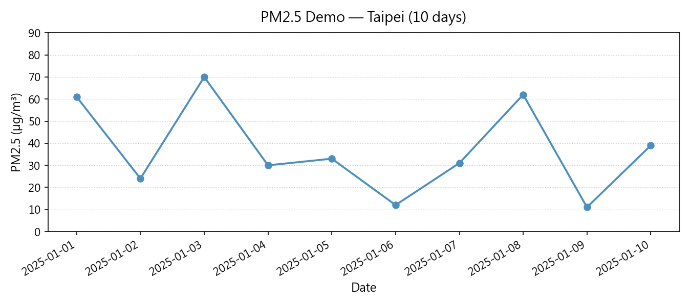

This project ingests hourly PM2.5 readings from Taiwan EPA monitoring stations,
applies light cleaning to handle missing values and unit normalisation, and
produces comparison charts across stations. The analysis is driven by a
single Jupyter notebook backed by reusable helper functions in src/.
